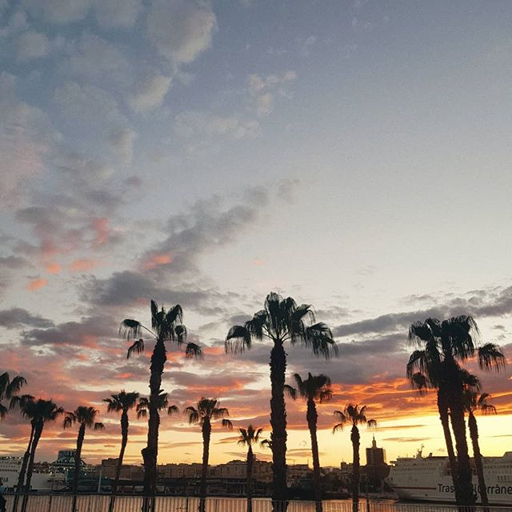

Unforgettable experience in Spain

Where should you go, if you come to visit Spain?
- El Chorro
- Malaga
- Tarifa
Chorro is the name of the place, consisting of the transparent lakes, located near Malaga. You will never forget the color of the water and the atmosphere of the wildness and freedom.
Malaga is full of palm trees, and it was my home for almost six months. I would highly recommend staying in the city center of Malaga, as it has unique architecture, which has remnants of Arabs culture combined with the spirit of Spain. The city is full of life and holds many festivals around the year. The temperature during the winter season varies from +10 to +15 Celsius degrees, and the summer season warms people with temperatures between +25 and +40.
Last but not least recommended place would be the southern point in Spain, named Tarifa. Tarifa is situated directly on the sea. To be more precise, it sits at the Strait of Gibraltar where the Atlantic and Mediterranean meet. This makes it an ideal place to see different types of sea life. It locates in the south, and it is the nearest point to Africa. You will never forget the view of the different continents, which seems to be just in front of you. White sand, the ocean, palm trees, and Africa in front of your eyes: Do you need anything else?

These places would be placed in the TOP-3 destinations to visit in Spain. If you want to learn about the Erasmus projects organized by the ESN group and UMA university, continue reading and explore more places to go.